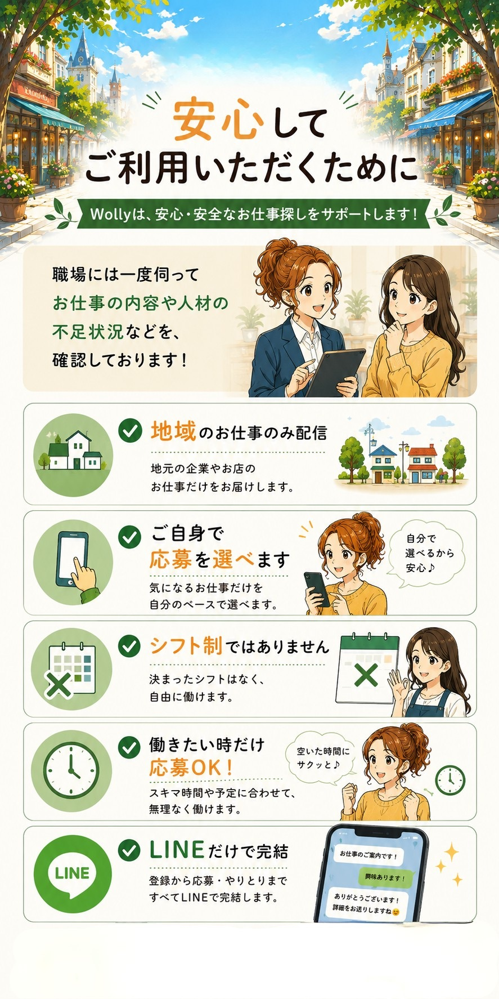
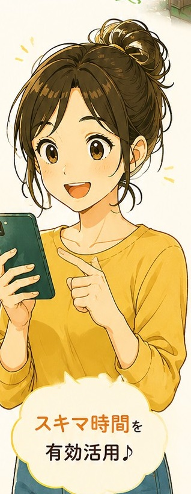
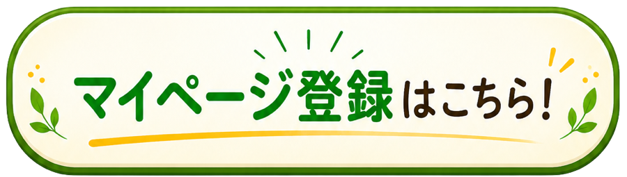
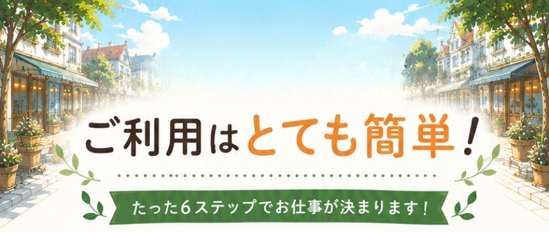
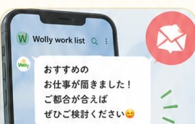
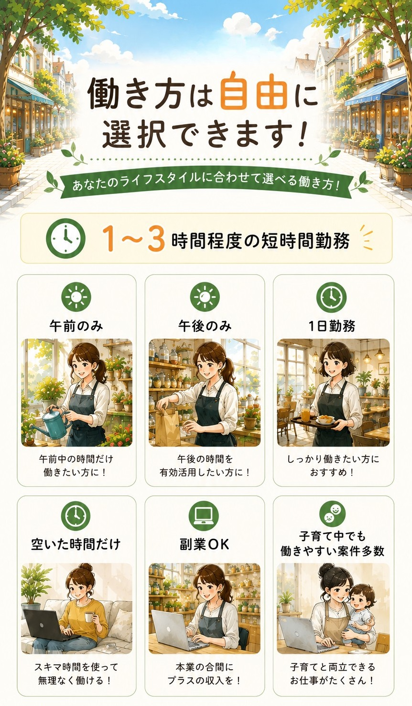
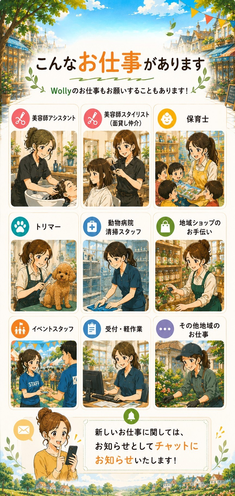

はじめての方へ
Wolly のことと、お仕事が決まるまで

まずはマイページ登録
1分ほどで完了！
名前・連絡先・希望するお仕事などを入れるだけ。



- 1
LINEとマイページに登録
Wolly のLINEを友だち追加して、マイページを登録します（1分ほど）。
- 2
- 3
お仕事がLINEに届く
新しいお仕事は、毎朝10時ごろLINEでお知らせします。エントリーの前に、ここを確かめましょう。

- 4POINT
「エントリーする」を押すだけ
登録した内容で申し込むので、確認して押すだけ。お仕事先へのひとこと（任意）も添えられます。
↑ 求人のこのボタンをタップ - 5
お仕事決定！
結果はLINEでお知らせします。お店やお仕事の動画が届いたら、必ず見ておきましょう。
- 6POINT
当日、着いたら「チェックイン」
「応募状況・出退勤」の画面の大きなボタンを押します。終わったら「チェックアウト」。


お仕事が決まったら
安心して働くために、必ず読んでください
当日の大切なルール
出勤・退勤の連絡を
忘れずに！
着いたら「チェックイン」、終わったら「チェックアウト」。どちらかの方法で記録できます。
決まったお仕事のキャンセル
お仕事先はあなたを待っています。決まったあとのキャンセルはできるだけ避けてください。どうしても行けなくなったら、すぐに Wolly のトークでご連絡ください。お仕事先への連絡は Wolly が行います。
お給料について
がんばった分は、しっかりお支払いします
よくある質問
子どもが急に熱を出したら？
わかった時点で、すぐに Wolly へご連絡ください。お仕事先への連絡は Wolly が行います。
当日のキャンセルはお仕事先の負担が大きいので、日ごろから無理のない予定でエントリーしましょう。
はじめてのお店でも大丈夫？
はい、大丈夫です！ はじめての方もたくさん活躍しています。わからないことは、その場で遠慮なく聞いてください。動画があるお仕事は、事前に見ておくと安心です。
エントリーしたお仕事を取り消せる？
Wolly のトークでご連絡ください。決まったあとの取り消しは、お仕事先にご迷惑がかかるので、できるだけ避けてください。
月に何回働かないといけないの？
決まりはありません！ シフト制ではないので、働きたい日のお仕事を、好きなときに選べます。
登録した内容を変えたいときは？
マイページを開くと、登録した内容を確認・変更できます。住所や電話番号が変わったら、早めに変更してください。
これで準備完了！
Wolly のお仕事スタート
- 1マイページを登録
- 2アンケートでやってみたいお仕事を回答
- 3届いたお仕事にエントリー
- 4出勤・退勤の連絡を忘れずに
- 5困ったら Wolly へ